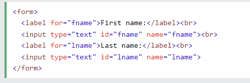
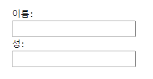
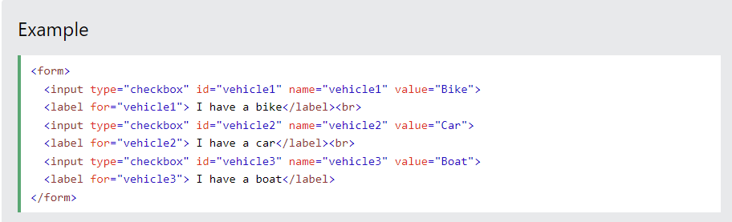
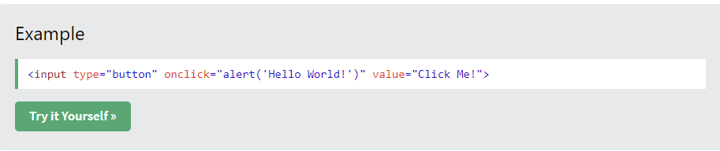
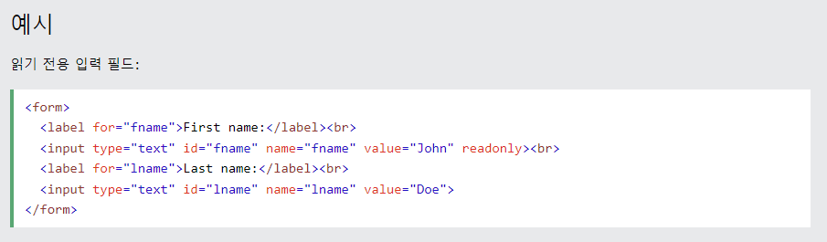
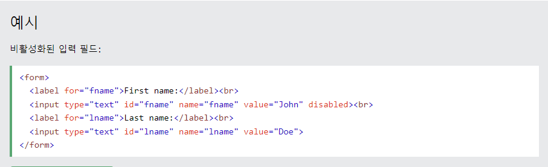
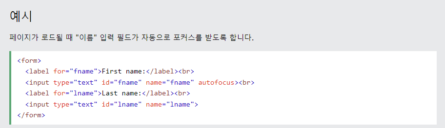
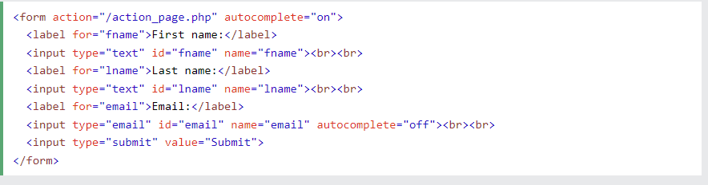

Input(인풋)
오늘 배울거는 인풋입니다. 인풋이 뭐죠?
인풋은 우리가 넣는 데이터라고 할 수 있습니다. 흔히들 말하는 로그인창에서 아이디랑 비번 치라고 나오죠? 그게 인풋입니다.
그럼 이 인풋을 왜 배우냐고 물어보면, 인풋은 상당히 중요한 html요소들 중 하나입니다.
우리가 항상 네이버나, 다음이나, 사내 인트라넷이나, 옷 시킬때 내 주소지, 그런거 빈칸에 적지 않습니까?
그거랑 똑같습니다.우리들이 치킨 먹을때 주소지 입력하라고 나오잖아요, 그거 안치면 어떻게 되요?
아마 사장님한테 전화 오거나,배달기사가 먹을겁니다. 그래서 우리는 이 인풋을 배워서 우리들의 소중한 치킨을 지켜야 할 필요가 있겠죠
자 그러면 인풋 한번 배워 봅시다.
인풋
어 인풋의 종류는 상당히 다양합니다. 버튼도 있고, 체크박스.이미지,파일등 많습니다.
이런 인풋들을 활용하면 내가 받고자 하는 정보들을 굉장히 얻기 쉽습니다.
자 그럼 인풋 한번 만들어 보죠
인풋의 가장 기본적인 형태는 아래의 이미지와 같습니다.
이게 이제 인풋 기본 틀 입니다.
자 인풋은 처음에 폼으로 시작합니다.왜 폼으로 먼저 시작할까요?
아재개그 처럼 우리인생은 폼생폼사니까 가 아니고, 폼은 일종의 형태 라고 생각하시면 편합니다.
조금 더 쉽게 생각을 하면 틀이라고 생각하시면 더 편해요, 우리가 추운 겨울날에 붕어빵 먹을 때 붕어빵 만드는 틀 한번이라도 보지 않았습니까?
폼도 똑같아요. 폼으로 틀을 먼저 잡고 내가 어떤 요소, 어떤 태그를 쓸건지,는 몰라도 일단 틀에 맞춰서 하겠다라는 일종의 약속이죠
그 다음 이제 이 붕어빵에 앙꼬를 팥을 넣을건지, 슈크림을 넣을건지 아니면 김치를 넣을건지 그거는 개발자 마음입니다.
자 한번 저 그림처럼 따라 쳐보세요, 한번 보는 것보다는 내가 치는게 훨씬 더 몸에 배깁니다.
자 따라치셨으면 아마 밑에와 같은 사진이 나올겁니다.
자 이렇게 생긴게 나오셨나요? 그럼 잘 따라오신게 맞습니다.
못 따라오셨으면, 아 그렇구낭, 이러지 마시고 주변 동료들에게 물어보세요
자 그렇다면 코드 분석을 해보도록 하죠, 저기 따라 치라는 코드에서,
라벨은 무엇일까요?(질문임)
저 라벨은 말 그대로 스티커 입니다. 우리가 딱 빈칸 만 놓고
정보를 입력하세요 이러면 사용자들이 무슨 정보, 뭘 치라는지 모르지 않습니까?
자 보세요, 괜히 여기 빈칸에 내 계좌나 아이디 적었다가, 통장 잔고 0원 될 것 같지 않습니까?
그런 위험을 방지 하기 위해 우리는 친절하게 요 빈칸 위에 라벨을 붙여서 씁니다.
자 이렇게 저는 라벨을 붙였습니다. 딱봐도 친절해 보이죠? 그러면 저기다가 계좌 비밀번호랑, 계좌번호 적어주세요~
이렇게 라벨을 붙여도록 합시다.
간단하게 끝내고, 저 라벨에 붙어 있는 for, type은 영어단어를 잘 아시면 됩니다.
근데 한가지 주의 하실점이, for는 그냥 버리세요 자바스크립트 배울때 for문이랑 헷갈리수도 있어유
type
자 그다음은 타입입니다,
타입은 영어 단어 그대로 해석을 하시면 됩니다.모르면 네이버 사전 ㄱㄱ 네이버 사전 바로 가기
type은 네이버 사전을 보아하니 형태 유형,종류라고 하네요
그러면 사전에서 정의한 그대로 생각해보면 될것 같습니다.
아마도 종류라고 생각하는게 편하겠군요
자 이 type에는 엄청난 종류의 type변형이 있습니다.
radio, checkbox , button , color, date , email, file , serach, tel, time 등이 있습니다.
와 듣기만 해도 많고 토나오지 않나요? 네 근데 사실은 이거 다 안외워도 됩니다.
이런거 다 외우고 있어도 그냥 아는 지식만 많아 질 뿐이고, 사실 제대로 안씁니다.
그래도 좀 쓰는 태그들을 한번 알아 볼까요?
먼저 radio 입니다.
자 radio를 어떻게 쓰죠?
일단은 꺽새 한번 쓰죠
다들 꺽새 쓰셨습니까? 꺽새 눌렀으면 그다음에 form을 만들도록 하죠.
우리는 아까 전에 input을 만들기 전에 form을 먼저 만든다고 배우지 않았습니까?
그래서 우리는 form을 먼저 쓰도록 합시다.
자 그런다음에, input 을 form 안에 넣어 보도록 하죠!
예를 들면,

이렇게요. 다들 쓰셨나요?
자 그러면 위에 있는 이미지를 가지고 코드 분석을 하도록 하죠,
자 아까 우리는 form태그에다가, input 태그를 만들지 않았습니까?
만들었으면,위에 있는 예시 처럼 똑같이 만들어 보도록 하죠,
여기는 뭘 적는 문제란 입니다.
자 다들 저 위에 있는 예시처럼 만드셨다면,
아마 위에 처럼 선택지가 뜰겁니다, 이게 바로 radio라는 겁니다.
radio 라는 type을 input에서 고르게 되면, 라디오 버튼 처럼 이게 나오게 되는 거죠,
자 그러면, 이 radio 말고도 다른 type의 input종류들이 있습니다.

자 이놈은 위의 radio랑 똑같은데 네모칸으로 바뀌어 있는 애 입니다.
근데 얘는 위의 애랑 좀 다릅니다.
위에 있는 애는 아마 하나만 선택이 가능 할겁니다.
근데 지금 우리가 배우려고 하는 애는 아마 여러개가 선택 가능 할 겁니다.
한번 눌러보세요.
되죠?
이게 뭐냐면 바로 체크박스 입니다.
우리가 뭐 설문 조사 만들때 남자냐 여자냐, 애인 유무, 흡연 유무, 등
선택 할때 다중 선택이 되지 않습니까?
인터넷, html에서는 이런 설문조사 기능을 만들 때는 체크박스 기능을 씁니다.
다음은 버튼 기능입니다.
버튼 기능은 어떻게 만들죠?
아 걱정 마시요, 이것도 인풋입니다.
버튼 기능도 인풋 기능 중 하나이니깐, input태그를 만들어서 쓰도록 합시다.
버튼 눌러보셨나요?
뭔가 이상한 문구가 뜨지 않습니까?
굳이 자바스크립트를 쓰지 않아도 쉽게,버튼 기능을
만들수가 있습니다.
자 그러면 코드를 봐야죠,
코드는 이렇게 생겼습니다.

어때요, 참 간단하죠?
원래 버튼 기능 만들때는 자바스크립트를 좀 쓰기는 하는데,
간단한 구현을 할때는 직접 쓸수가 있습니다.
저도 이거 공부하면서 처음 배웠습니다.
역시, 놀라운 코딩의 세계...
아무튼 각설 하고, 우리는 지금 3개의 중요한 인풋 기능들을 보았습니다.
이거 말고도 더 많은 기능들이 있지만, 가장 중요한 3개의 기능을 배우는게
훨씬 더 효울적이니깐 여기 까지만 공부 하도록 하죠
값, 속성
이번 챕터는 좀 머리 아픈 챕터입니다.그래도 배워 두는게 정말 도움이 되죠
근데 굳이 말하자면 꼬옥 도움이 되는 거는 아닙니다.
근데 배우면 상사나,선생님에게 칭찬을 받을 수 있는 기능 이긴 합니다.
자 그럼 배워 보도록 할까요?
자아~ 우리는 위에서 기본적인 아이디란 과, 비밀번호 란을 만들어 보았죠?
기억 안나면 금붕어라고 놀릴겁니다.
방금 전에 이거 만들지 않았습니까?
사실 비밀이지만, 이게 인풋의 대명사 라고 할 수 있습니다.
근데 이런 형태의 인풋 태그를 읽기 전용,
인풋란, 안보이게 만들기, 사이즈 속성,자동 채우기 까지 세밀하게 다룰 수 있습니다.
읽기 전용
읽기 전용 속성은 입력란을 수정 할수가 없습니다.
혹여나, 읽기 전용란 에다가 아무렇게나 쓰고 별 이상한 짓을 하려고 해도 안될겁니다.
애초에 막아버렸기 때문이죠

자 위에 보이시는 코드 그대로 따라 쳐보도록 하져
그대로 따라 치셨으면, 한번 코드 한번 돌려 봅시다!!
저 위에 있는 첫번째 성 공백란에 키보드로 뭐가 쓰여 지십니까?
저는 안됩니다.
네, 이렇게 읽기 전용에서는 뭔 짓을 하려고 해도, 애초에
컴퓨터에서 막아버리기 때문에 안됩니다.
그렇다면, 이거를 수정 가능하게 바꾸려면,
어떻게 해야 할까요?
아무래도, 저 readonly를 삭제를 해 줘야 겠져?
그래도 얘(읽기 전용)은 데이터라도 보내줍니다.
근데, 이마저도 안보내 주는 아주 어마무시한 애가 있습니다.
자 그럼 한번 알아볼까요?
비활성화 된 공백란
얘는 아까와 말하듯이 무시무시한 애 입니다.
다른 의미로 히키코모리 라고 생각 하시면 좋을거 같네요.
얘는 아이디란 에다가 진짜 아무런 것도 못합니다
그냥 건드려도 뭘 하지를 못하고
데이터가 필요해서 전송해 주세요~ 하고 제출(submit) 버튼
눌러도 데이터 안줍니다.
얘는 잘 안쓰기도 하는데, 필요 할때가 은근히 많습니다.
자 그럼 한번 써도록 할까요?
한번 아이디 란 만져보세요
저는 클릭도 안되네요.
네, 이렇게 비활성화를 시키면, 만지지도 못할뿐더러, 이 아이디란에, 데이터,
수정 못하겠죠? 영유아들에게는 필수 입니다.
그렇다면 코드를 한번 보도록 하죠

요놈이 코드 입니다.
딱 아이디란 에다가 disable이라는 것만 쳐 줬죠?
상당히 만들기는 간단한데,기능은 꽤 괜찮죠
이런걸 인풋 대비 아웃풋이 좋다는 겁니다.
하잖은 농담 이였구요,
다음은 placeholder라는 걸 배워 볼겁니다.
place holder
자 얘는 뭐하는 아이 인가 보면,
쉽게 말하면, 힌트를 주는 겁니다,
너무 추상적인가요?
그렇다면, 상상을 한번 해 보도록 합시다.
우리가 아이디란, 비밀번호란을 보고 있는데,
아이디란, 비번란에,
아이디를 입력하세요, 비밀번호를 입력하세요
라고 작은 글씨나, 회색 글씨로 적혀 있지 않습니까?
그거를 이 placeholder라고 합니다.
우리나라 말로 하면은 자리표시자 속성이라고 하는데,
우리는 간지 나게 플레이스홀더라고 합시다.
자 그럼 한번 사용 해도록 할까요?
자 아까 보았던, 읽기 전용 속성입니다.
여기서
readonly를 지우고, placeholder라고 쳐봅시다.
그러면, placeholder = "" 이렇게 나올겁니다.
한번 해보세요!!
저는 잘 나오네요,
혹시라도, 아이디란에, 데이터가 있으면 지워주세요.
그래야자, 잘 보입니다.
네 이렇게 플홀은 유저, 사용자들에게 뭘 적으라고 하는지 힌트를 주는 용도 입니다.
꽤 유용 하죠?
자 그럼 다른 기능을 또 알아보도록 합시다!!
자동 초점
이번에는 자동 초점 속성을 사용 할 겁니다,!!
자동 초점이 뭐냐고요?
페이지가 로드 될때, 입력란(아이디란)이 자동으로 초점이 맞춰 지는 겁니다.
뭔 말인지 잘 모르겠다고요?
아 그럼 직접 해봐야죠
해봅시다!!
자 저는 사용 해보았는데요,
지금 아이디란이 검은색으로 테두리가 쳐지면서, 입력하라고 깜빡 깜빡
하지 않습니까? 이게 바로 자동 초점입니다,
원래 기본 태그인,
이 형태는
입력하고 검은색 테두리도 안뜨고, 커서가 깜빡 깜빡 하지도 않죠?
근데 위에 보십시오, 아래와 다르게 테두리와, 커서가 깜빡 깜빡 하지 않습니까?
이게 자동 초점 기능입니다.
사실 별거 아닌거 같이 보여도,나름 사용자나, 유저에게는 친절한 기능입니다.
그렇다면 이 기능은 어떻게 쓸까요?
코드를 한번 보도록 하죠

자 기본 형태에다가, autofocus를 붙였네요,
근데, 이런 형태 어디서 계속 보지 않았습니까?
네 맞습니다, 플레이스홀더니, 읽기 전용이니, 비활성화니,
계속해서 뒤에다가 속성들을 붙이는 형태입니다,
저만 알아낸거 같다고요?
그렇다면 유감ㅠ
이렇게 우리는 인풋 태크 뒤에다가
저희들이 원하는 속성들을 붙여서 원하는 기능을 만들 수가 있습니다.
이제 우리들은 input 태그에 대해서 좀 더 좋은 속성들을 공부 해보 았습니다
더 궁금 한 것이 있으면, w3school을 사용해 보도록 합시다!!
w3xhool input 공부하러 가기
자동 완성!!
자 이번에는 자동 완성 기능 입니다.
아이폰 유저라면 무적권 끄는 속성중 하나죠
갤레기들은 모릅니다 ㅋ
이 자동완성 기능은 뭐냐 하면,
우리가 사용하는 크롬, 마이크로 엣지에서,
우리가 정보, 데이터를 입력 하면,
예전에 입력한 값을 기억해 내서, 채우는 겁니다.
크롬이 그런 기능이 굉장히 발달 해 있죠
약간 검색창에 기록 남는 것처럼 비스무리 한거라 생각하시면 됩니다.
그렇다면, 이 자동 완성 기능의 사용 방법은 무엇일까요?
얘는 우리가 아까와 배운것들과 다르게,
인풋 태그 말고, 폼 태그에 미리 선언을 합니다,
자 그럼 코드를 한번 보도록 하죠!!

자 보이세요??
인풋 태그가 아닌, 폼 태그에 작성 하는 겁니다.
그럼 왜 인풋 태그 말고 왜 폼 형태에 작성하는 거일까요?
그 이유는, 폼 태그가 인풋 태그 부모라 그런겁니다.
일일이 하나하나씩, 자동완성 기능을 붙일수도 있습니다.
근데, 너무 오래걸리잖아요
그래서 한번에 시원시원하게, 부모 태그에다가 붙이는 겁니다.
요 자동완성 기능은 여러 기능에서도 쓸수 있습니다,
이메일,비밀번호,날짜,전화번호,등
같이 쓸수 있는애들이 많습니다.
유용하죠
마치며
우리는 이렇게 input 태그를 사용해 보았습니다,
어떠세요? 유용 했나요?
인풋 태그는 hthml에서 굉장히 중요한 기능이니,
강의 끝나고 나서도 w3school 들어가서, 꼭 연습하시길 바라겠습니다.
많이 알고, 직접 쓰면 쓸수록 실력이 느는 것은 당연한 거니까요,
배우느라 고생하셨습니다!!